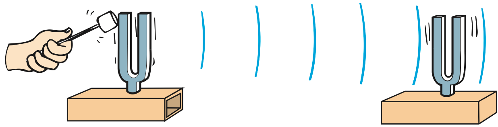

26.4 Transparent Materials
When light is transmitted through matter, some of the electrons in the matter are forced into vibration. In this way, vibrations in the emitter are transmitted to vibrations in the receiver. This is similar to the way sound is transmitted (Figure 26.6).

The way a receiving material responds when light is incident on it depends on the frequency of the light and on the natural frequency of the electrons in the material. Visible light vibrates at a very high frequency, more than 100 trillion times per second (more than 1014 Hz). If a charged object is to respond to these ultrafast vibrations, it must have very, very little inertia. Because the mass of electrons is so tiny, they can vibrate at this rate.
Such materials as glass and water allow light to pass through in straight lines. We say they are transparent to light. To understand how light travels through a transparent material, visualize the electrons in the atoms of transparent materials as if they were connected to the nucleus by springs (Figure 26.7).4 When a light wave is incident upon them, the electrons are set into vibration.

Materials that are springy (elastic) respond more to vibrations at some frequencies than at others (see Chapter 20). Bells ring at a particular frequency, tuning forks vibrate at a particular frequency, and so do the electrons of atoms and molecules. The natural vibration frequencies of an electron depend on how strongly it is attached to its atom or molecule. Different atoms and molecules have different “spring strengths.” Electrons in the atoms of glass have a natural vibration frequency in the ultraviolet range. Therefore, when ultraviolet waves shine on glass, resonance occurs and the vibration of electrons builds up to large amplitudes, just as pushing someone at the resonant frequency on a swing builds to a large amplitude. The energy received by any glass atom is either reemitted or passed on to neighboring atoms by collisions. Resonating atoms in the glass can hold onto the energy of the ultraviolet light for quite a long time (about 100 millionths of a second). During this time, the atom makes more than 1 million vibrations, and it collides with neighboring atoms and gives up its energy as heat. Thus, glass is not transparent to ultraviolet light.
At lower wave frequencies, such as those of visible light, electrons in the glass atoms are forced into vibration, but at lower amplitudes. The atoms hold the energy for a shorter time, with less chance of collision with neighboring atoms, and with less energy transformed into heat. The energy of vibrating electrons is reemitted as light. Glass is transparent to all the frequencies of visible light. The frequency of the reemitted light that is passed from atom to atom is identical to the frequency of the light that produced the vibration in the first place. However, there is a slight time delay between absorption and reemission. It is this time delay that results in a lower average speed of light through a transparent material (Figure 26.8).

Figure 26.9 was omitted because no matching captured image was supplied.
Light travels at different average speeds through different materials. We say average speeds because the speed of light in a vacuum, whether in interstellar space or in the space between molecules in a piece of glass, is a constant 300,000 km/s. We call this speed of light c.5 The speed of light in the atmosphere is slightly less than in a vacuum, but it is usually rounded off as c. In water, light travels at 75% of its speed in a vacuum, or 0.75c. In glass, light travels at about 0.67c, depending on the type of glass. In a diamond, light travels at less than half its speed in a vacuum, only 0.41c. When light emerges from these materials into the air, it travels at its original speed, c.
In glass, infrared waves, with frequencies lower than those of visible light, cause not only the electrons but entire atoms or molecules to vibrate. This vibration increases the internal energy and temperature of the structure, which is why infrared waves are often called heat waves. So we see that glass is transparent to visible light, but not to ultraviolet and infrared light.